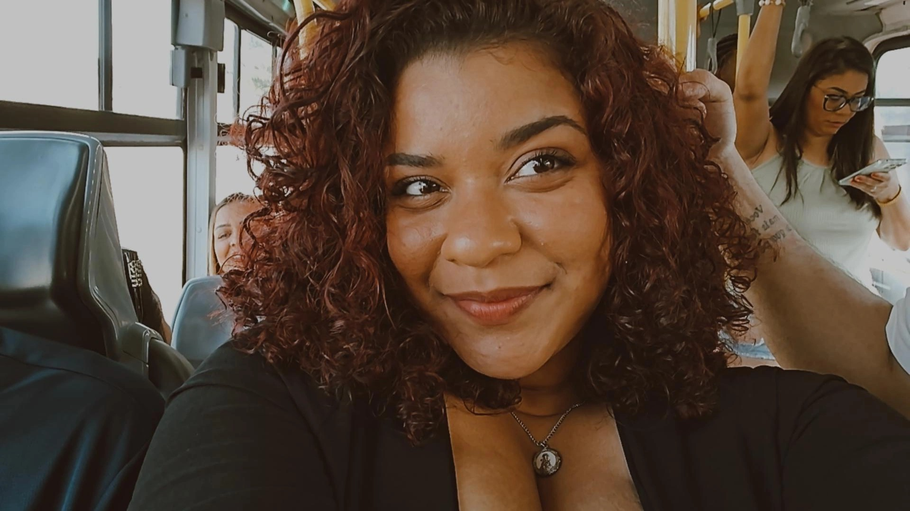

🌙 Olá! Que bom te ver por aqui!
Me chamo Raquel Taveira e atualmente estou cursando Análise e Desenvolvimento de Sistemas na UNISUAM. Sou apaixonada por tecnologia desde pequena — e pelo universo geek desde mais nova ainda (kkkk). Sou uma pessoa extremamente curiosa, então estou sempre explorando assuntos variados, desde exoplanetas até aquela fofoca básica de celebridades.
🔭 Atualmente, estou me aventurando no desenvolvimento de aplicativos, sempre buscando evoluir e transformar ideias em projetos legais.
🌱 No momento, estou aprendendo Java e Node.js ao mesmo tempo (sim, eu gosto de desafios 😱).
💬 Curte tecnologia? Pode vir conversar comigo! Sempre tenho algo para compartilhar ou discutir.
🎨 Nos momentos livres, gosto de relaxar jogando The Sims 4, lendo (principalmente distopias e ou fantasias) e explorando minha criatividade com artesanato.
✨ Sempre aberta a aprender, colaborar e criar coisas incríveis!